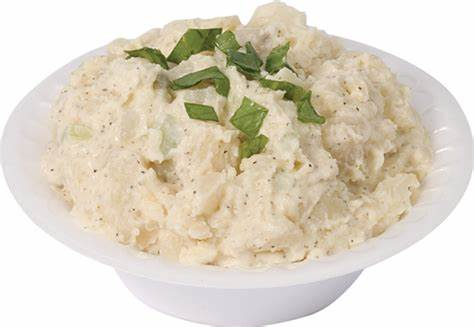

Potato Salad

Description
A wonderful, creamy potato salad. Endulge in a delicious and indulgent dish
to be enjoyed in the summer, winter, autumn, or spring! Delight your neighbors
by crafting this amazing dish and you'll be the talk of the town in no time.
Ingredients
- 5 pounds russet potatoes
- 4 large eggs
- 4 teaspoons kosher salt
- 1 cup mayonnaise
- 5 stalks green onion
- 2 stalks celery
- 1/3 cup sour cream
- 3 tablespoons yellow mustard
- 1 tablespoon chopped fresh parsley
- 2 teaspoons pickle juice
Directions
- Cut potatoes into 1 1/2-inch cubes. Place in a large pot and cover with water by 2 inches. Add eggs and 3 teaspoons salt; bring to a boil over medium-high heat. Reduce heat; simmer 9 minutes.
- Remove eggs with a slotted spoon and immediately immerse in ice water for several minutes to stop the cooking. Continue cooking potatoes until fork-tender, about 1 minute more; drain.
- Peel and chop eggs; set aside.
- Add mayonnaise, onions, celery, pickles, sour cream, mustard, pickle juice, dill, and pepper to a large bowl; stir to combine. Stir in potatoes and eggs until well blended, mashing potatoes very slightly. Season with salt and pepper, adding up to 1 teaspoon more salt, if desired.
- Transfer to a serving bowl, sprinkle with paprika, and garnish with olives. Cover and refrigerate at least 2 hours or overnight.